Projects
Things I built because I wanted to see them work, newest first by when they were finished; course projects from the B.Sc. and M.Sc. at NOVA FCT are in among them. The research projects are on the research page.
Ongoing
RomM: save sync with PlayStation consoles
- What
- A feature for RomM, a self-hosted ROM manager: RomM keeps the saves of a PS3 or PS4 on the local network in sync, both ways, over the console's FTP server (webMAN MOD on the PS3, GoldHEN on the PS4).
- How
- Each console type is a small profile (where profiles, games and saves live, what a valid save looks like); the FTP client, sync loop and polling are shared, so another console is one more profile. Only folders whose file listing changed are transferred; large PS4 save folders are streamed instead of held in memory; saves are only pushed back to the console that made them, because they are signed for one console and user.
- Note
- Developed with the help of Claude Code. RomM itself is a third-party project; this is my contribution to it.
- rommapp/romm #5319 (draft, open)
Parts that had to exist
Over 100 hours of modelling, mostly in Onshape, printed in PLA. For research and teams: the component housing and Raspberry Pi mount of the fixed-wing drone, the air brakes of the rocket. At home: an automatic dog feeder with its own circuit, a headset holder, a PS3 controller holder, a wire organiser and smaller fixes. I have also been learning BIM modelling in FreeCAD.
2026
Send to Kindle for Zotero
- What
- A Zotero plugin that adds “Send PDF to Kindle” to the item menu and copies the PDF to a Kindle running KOReader over SSH, mirroring the Zotero collection structure on the device.
- Why
- Reading papers on e-ink, without emailing files to myself.
- How
- Finds the Kindle's IP from its MAC address in the ARP table (probing the local subnet if needed),
then runs
ssh mkdir -pandscpagainst KOReader's built-in SSH server. Linux only; tested on a Kindle Paperwhite (10th generation). Written with Claude Code.
- Code on GitHub (MIT)
A “Simon Says” game you play with your body
- What
- A real-time game controlled by body movement through an ordinary webcam: the player has to put their hands over the coloured regions the screen asks for, faster as the score grows.
- How
- A deep-learning face detector finds the player; GPU template matching, written as custom OpenCL kernels, keeps tracking the face from frame to frame. A body region cut out around the face goes to OpenPose for the hand keypoints, which drive the game's states and collision checks. The heavy image processing runs on the GPU; game logic stays in Python.
- Code on GitHub (with the course's practical assignments)
2025
Satellite attitude control with nonlinear MPC
Attitude control of a rigid-body satellite, with orientation on SO(3) and torque as input: a nonlinear model-predictive controller for the unconstrained manoeuvre and again with constraints.
An autonomous sprayer for an olive orchard
- What
- Automating a tractor that tows a sprayer through an olive orchard, in three steps of rising difficulty: drive to a point, follow a row despite terrain disturbances, then carry out the whole spraying job, delivering 8 ml to every tree within reach while keeping the cost per hectare low and staying clear of the trees.
- How
- The tractor is a nonlinear kinematic model with a towed trailer. The first step uses a linear
model-predictive controller; the full job uses a Lyapunov-based backstepping controller that
follows waypoints laid out between the rows at 40 km/h, with tractor and trailer integrated with
ode45. The spray is a half-disc behind the trailer, and its overlap with each tree's canopy, integrated over time, gives the dose each tree received.

CAPTURE wiki
Documentation for preparing, testing and flying indoor and outdoor missions with the lab's M690B drone, plus a single-piece EasyGlider CAD model, for the CAPTURE research project.
A ground vehicle that avoids obstacles and detects its own faults
- What
- A decision system for a ground vehicle, built in three iterations: a double-integrator model with an A* path smoothed by splines, a controller and a fault-detection observer; then the nonlinear vehicle model handled by feedback linearisation; then an optimised version of the whole chain.
- How
- The map is a 20 × 20 grid. At every step A* plans a path to the target around an obstacle whose keep-out zone grows with how unsure the vehicle is of its own position; cubic splines turn the grid path into a smooth reference, which a pole-placement controller follows. A Kalman filter estimates the state, and a set-valued observer built on constrained zonotopes bounds every position the vehicle could be in: if that set collapses, the measurements no longer fit the model and a fault is reported.

An open, solar-powered soil sensor
A low-cost, solar-powered soil-monitoring node that reports over LoRa, designed with open hardware and software as an alternative to commercial sensors costing around €300 each plus a yearly fee. A solar panel feeds an LM2596S buck converter and a TP4056 charger for four 18650 cells; an MT3608 boost converter powers an ESP32, which reads an RS485 soil sensor through an RS485-to-TTL converter and sends the readings over a LoRa module.

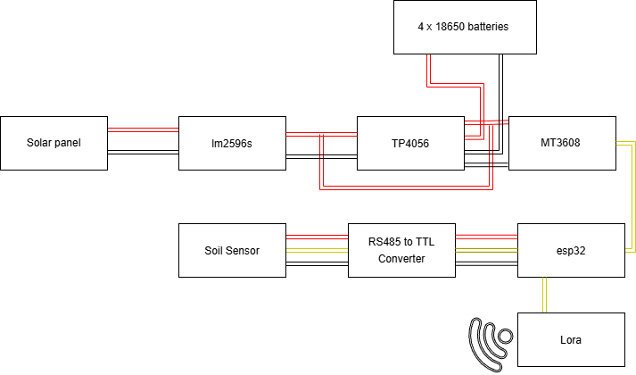
PX4: fixed-wing aerodynamics and parameter tools
- What
- The tooling behind my YEF-ECE 2025 paper, offered back to PX4: enhancements to the AVL automation in PX4-gazebo-models, which turns a YAML description of an aircraft into a Gazebo model with real aerodynamic coefficients, and two tools for moving parameters between QGroundControl and PX4's simulation (QGC2ROMFS and ROMFS2QGC).
- Why
- Fixed-wing drones are hard to simulate faithfully; every new airframe meant hand-editing model files.
- PX4-gazebo-models #79 (open) · #61 (closed)
- PX4-Autopilot #24373 · #24374 (closed)
A robot that plays a rhythm game
- What
- Servos zip-tied to a guitar controller press the five fret buttons and the strum bar on their own, playing a Guitar Hero-style game from what is on screen.
- How
- A Python script grabs a strip of the screen above each of the five note lanes, detects notes by colour, converts how far each note is from the strike line into a delay, and sends the five delays over serial. On an ESP32 running FreeRTOS, one task per fret receives its delay through a queue, presses at the right moment and signals a shared strum task through a semaphore. Two versions of the screen layout were tuned: solo and duel.


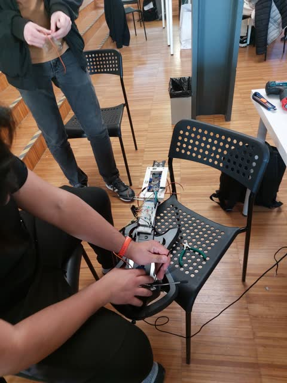

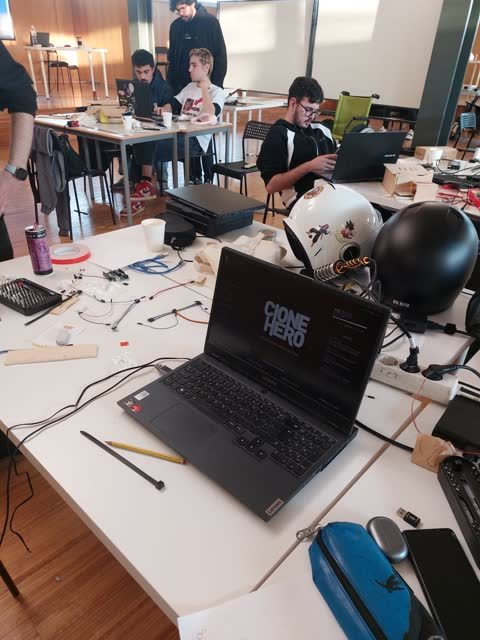

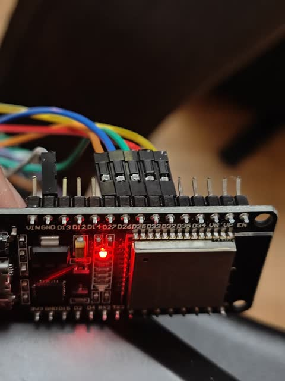

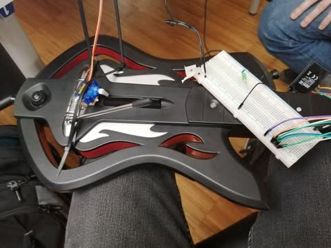

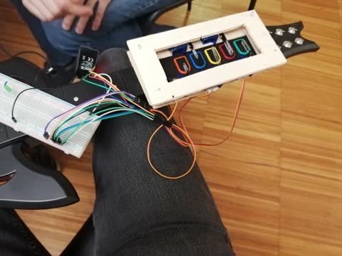

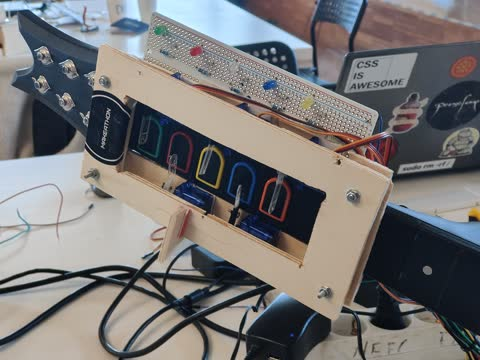

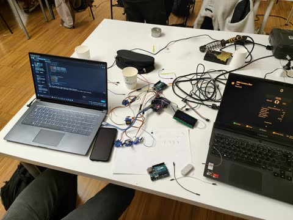
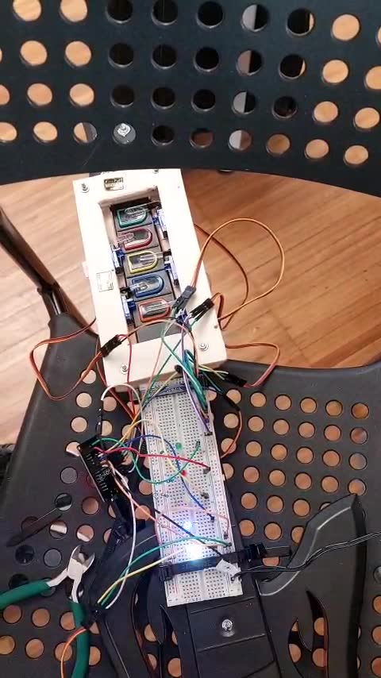
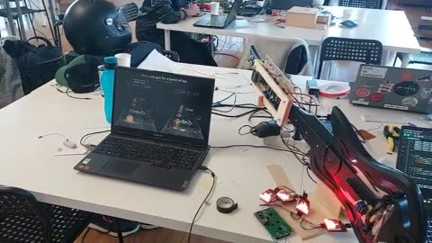
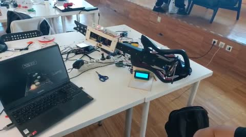
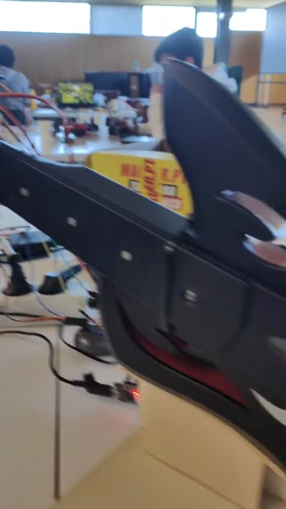
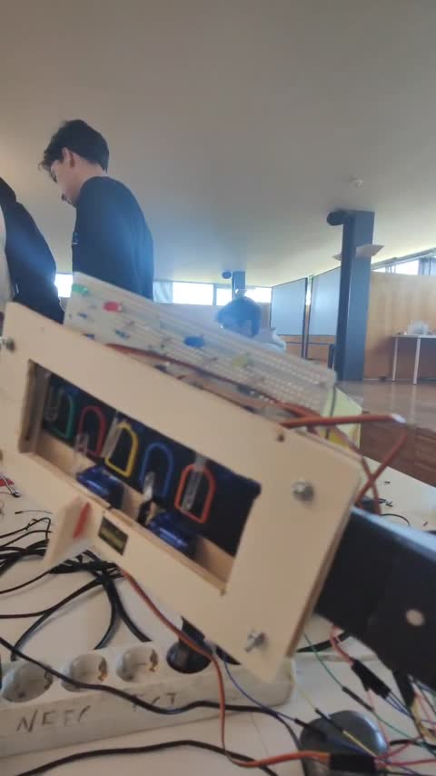
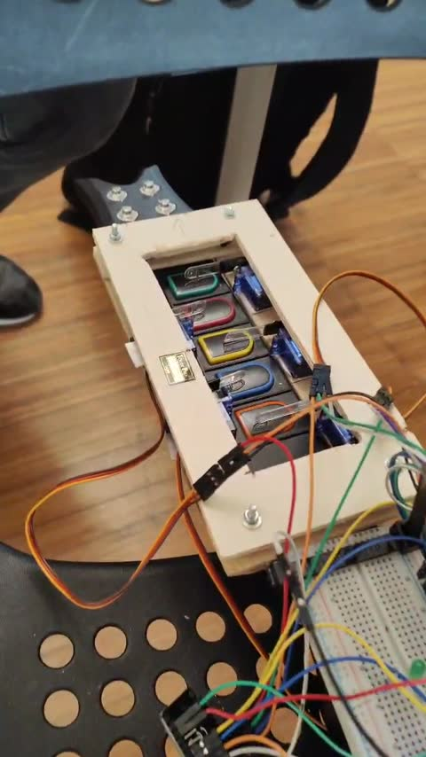
2024
Road-sign recognition with hand-written image processing
- What
- A Windows program that finds traffic signs in a photo, tells warning triangles from round signs and reads the number on speed-limit signs. The image processing is written by hand, working directly on the pixel buffer; the library is used to hold the images.
- How
- The image goes to HSV and a red filter keeps the sign borders; connected-component labelling separates the blobs, small ones are dropped, and each blob's bounding box and circularity say what shape it is. Inside a round sign a black filter isolates the digits, which are compared with reference digits to read the limit.


Airplane Business
- What
- A text-mode airline manager drawn entirely with escape codes and box-drawing characters: create and delete aircraft of a given type (A318 to A321 seat maps), see a flight's occupancy, reserve a specific seat, fill a flight with random passengers from name lists, look up who sits where, show an ASCII world map and start a flight.
- Why
- A summer project to see how far a terminal user interface can go in plain C, with no libraries.


OpenGL experiments
The graphics side of the car project and a few half-finished experiments around it: a C++ rewrite of the mapping viewer with its own serial-communication class and shaders for the grid, the car and the obstacle cubes, a robot arm and SLAM-style mapping.
I learnt OpenGL by following LearnOpenGL by Joey de Vries; the triangle and the lit cubes below are exercises from it.


Air brakes for a sounding rocket
- What
- An air-brake system that opens drag surfaces during the coast phase so the rocket's apogee lands as close as possible to a target altitude, as in the European Rocketry Challenge (EuRoC). Two pieces: a simulator plugin to design the controller, and the flight code to run it.
- OpenRocket plugin
- Built on ORBrake, the air-brake extension by WPI's High Power Rocketry Club: I ported it to OpenRocket 23.09 and JDK 17, exposed the air-brake drag coefficient in the interface and generalised it for other rockets, with the air brakes modelled as tube fins so the centre of pressure moves as they open.
- Arduino library
- A PID controller that takes altitude, total velocity and vertical velocity and drives the air-brake servo. To test it against a simulated flight that does not fit in the Arduino's memory, a Python script streams the OpenRocket CSV over serial one line at a time; a plain-C copy of the controller replays the same flight quickly on a PC, where the Arduino needs ten minutes for 180 s of flight.
- Hardware
- The air-brake mechanism was modelled and 3D-printed.

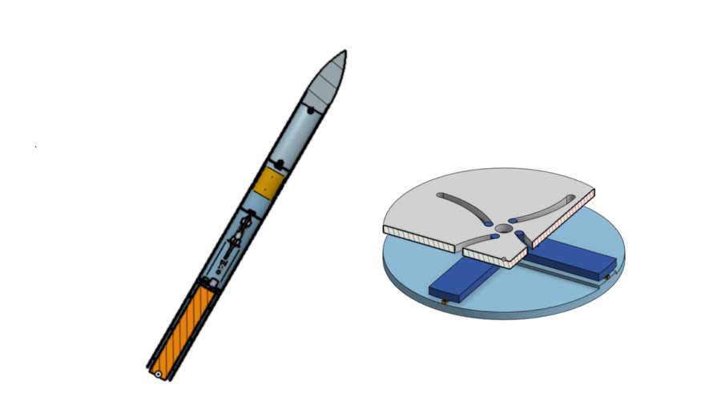
Car Mapping and Navigation
- What
- A small Elegoo robot car that maps the obstacles around it and shows them in 3D on a PC, while being driven from the keyboard.
- How
- On the car, an ultrasonic sensor on a servo measures distances and the ATmega328P drives the motors, first in bare-metal C written against the datasheet (ports, timers, UART), later in Arduino C++. Car and PC talk over a serial link with a compact binary protocol. The PC program, in C with OpenGL, keeps track of the car's pose and turns each distance reading into a block in a 3D scene you can fly through.

2023
Real-time systems: conveyor, warehouse and car wash
Three lab projects against simulated industrial plants: a splitter conveyor controlled by FreeRTOS tasks with events, queues and shared-resource locking; an automated pallet storage system written in Java; and a car-wash service manager in C++.
ML4Space: machine learning for space, and a three-body hackathon
- What
- The first edition of ML4Space, a summer school on machine learning for the space industry at NOVA FCT, with more than 50 participants from around the world: four days of classes and labs (machine learning, deep learning with PyTorch, orbital mechanics), then a six-hour team hackathon on the fifth day.
- Hackathon
- The three-body problem: from simulated trajectories of three bodies on a plane, learn a model that predicts where each body will be at later times given only the initial positions, without numerical solvers. Submissions were ranked by the root-mean-square error of the predicted positions; my team finished 6th of 7.


2022
Conway's Game of Life in 8086 assembly
- What
- The full game, written in about 2 800 lines of 8086 assembly with BIOS and DOS interrupts:
a mouse-driven main menu, a grid you draw live cells on with the mouse, and a generation and
live-cell counter in the header. Games can be saved and loaded as
.gamfiles, every run is logged with the player's name, date and time, and a top-5 table ranks the best runs. - How
- The screen runs in 320×200 VGA mode; each cell is a 2×2-pixel block, and the next generation is computed from the pixels on screen into a 15 200-byte buffer (160×95 cells) before it is drawn. A run ends when every cell dies or at generation 999. File handling, string formatting, number conversion and input are all hand-written routines.
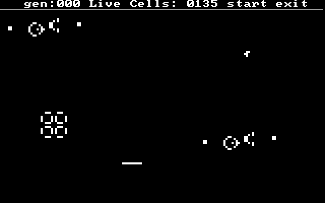

- Code on GitHub (
Conway game of life.asm, with smaller assembly exercises)
The Odin Project
My first web projects, from The Odin Project's Foundations course, built over a summer. The four with a live version open straight in the browser.
- Rock Paper Scissors, styled after Card-Jitsu from Club Penguin. Play · code
- Etch-A-Sketch: a sketchpad drawn on a grid of divs. Draw · code
- Calculator: a simple calculator in plain JavaScript. code
- Landing page: a layout from a design, in HTML and Flexbox. View · code
- Recipes: a first multi-page HTML site. View · code
- The course exercises (HTML, CSS and JavaScript) are collected in OdinProject.
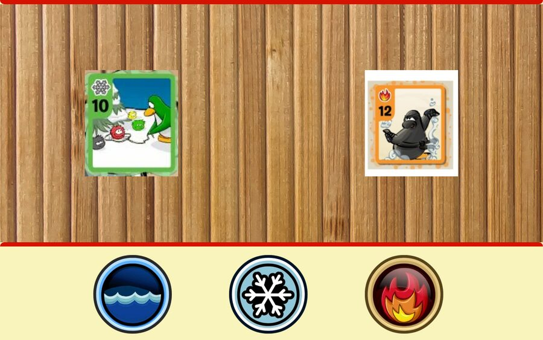
Smaller things
- DTSD (2025): an ESP32 reading several sensors, storing the data in Firebase and showing it in a Flutter Android app.
- FreeRTOS (2023): small projects with FreeRTOS.
- Path finding and data structures in C (2023).
- Arduino sketches: UART by polling and by interrupts, an ultrasonic sensor, a load cell.
- MATLAB sketches of vector-field path following: converging onto and circulating around lines, circles, shapes and splines, in 2D and 3D.